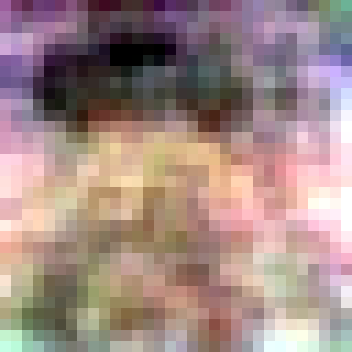
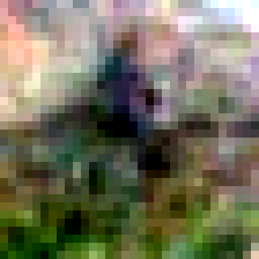
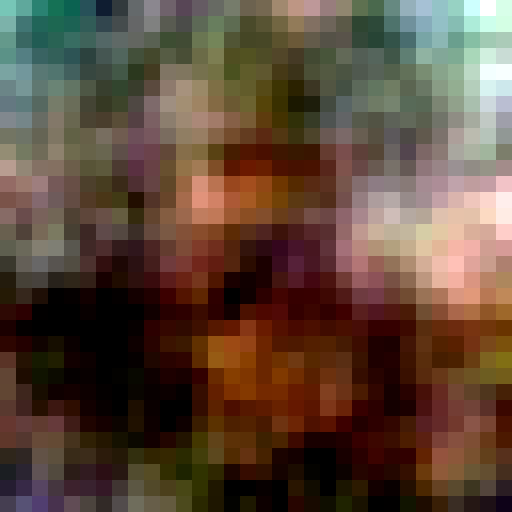
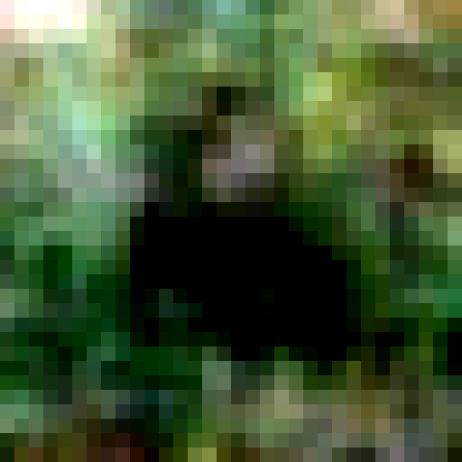

About
I like taking new ideas and making them into actual things. I'm a Python developer with extensive hardware and media experience, and an art degree. Excited about machine learning and super clean data architecture; building autonomous systems and finding out what they will do is the best.



